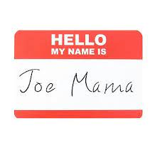

LAB 14: Debugging
Challenge
To debug my code and find out why my dialogue box pops up twice.
Problems
My major bug to fix was the dialoge box opening twice, instead of once. I had quite a few problems figuring out where the bug was. Chatgpt and my console told me it was in my JavaScript and then my Html. Its likely that my output in my Javascript was wrong or goofy but eventually I realized the issue I wanted to fix was in my html.
Results
It should only pop up once but Here is your correctly printed name according to the computer. ya :p
